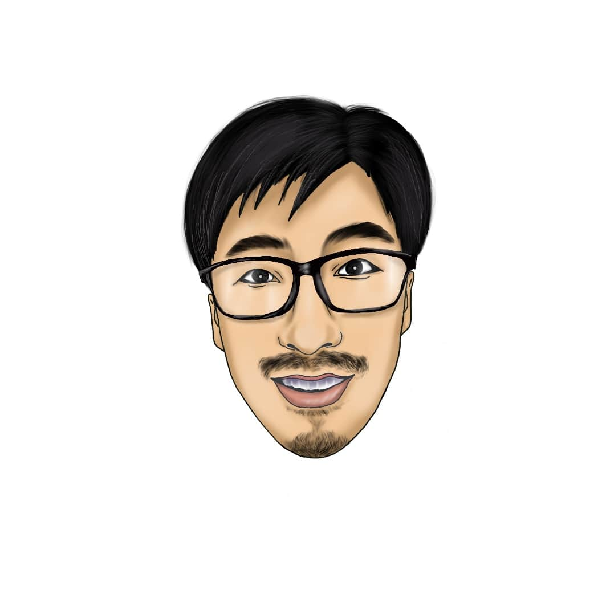

お仕事のご依頼はこちらからどうぞ
Web
特徴
共に考える
Webサイトを作りたいがどうしたらよいか分からない…。ぜひ私がお力になります。あなたのビジネスを加速させる効果的なWeb施策をご提案いたします。
常に未来志向
Webサイト制作は手段に過ぎません。UX/UIを意識し、達成すべき目的を常に念頭において制作を進めていきます。資産となるWebサイトをつくりあげていきましょう。
確かなスキル
一般的なWeb制作に必要なコーディングスキルの習得はもちろん、移り変わりの激しい業界にキャッチアップできるよう日々自己研鑽に努めています。安心してお任せください。
自己紹介

小笠原京也（オガサワラキョウヤ）
早稲田大学哲学科を卒業後、大学院生、シーシャカフェ店長、リサイクル屋、リフォーム職人、中小工務店の営業/経理、タイ留学など様々な経験をつんできた結果、Web制作という答えにたどり着きました。猛烈に学び、誠実にアウトプットします。自らの経験とスキルをまわりの方々の問題解決につなげていければ幸いです。1988年生まれ。宮城県育ち。タイを拠点に生活すべく奮闘中です（ただいま日本に帰国中）。
対応可能言語およびスキル
 CSS
CSS
 Github
Github
 英語
英語
制作実績

＜OGA DEV＞
当サイトです。デザインからコーディングまですべての工程を担当しました。ポートフォリオサイトとして王道のサイト構成を踏襲しつつ、人となりやスキルが素早く伝わるよう設計しました。Netlify + GitHub 環境で公開しています。これからもさらなる改善に努めていく予定です。

＜Nexter＞
Jonas Schmedtmann氏のコースの題材となります。特徴的な写真の散りばめはCSSグリッドを用いることで可能にしています。シンプルながらもラグジュアリー感を演出する実装です。

＜Natours＞
Jonas Schmedtmann氏のコースの題材となります。躍動感と遊び心に溢れたLPで、すべてのアニメーションがCSSで作られています。ぜひ実際のWebサイトで様々なアクションをお試しください。

＜isara.life模写制作LP＞
バンコクでノマドエンジニア講座を開催しているiSARA様のLPの模写となります。LPの見本となるような記事構成で、CSSフレームワークはBootstrapを使用して作成しています。

＜Fictional University＞
Brad Schiff氏のコースの題材で、WordPressにて構築されています。完全オリジナルテーマで、カスタムクエリやカスタム投稿タイプのみならず、GoogleマップAPIとの連携やJavaScriptとWordPress REST APIを組み合わせたライブサーチなどを実装しています。